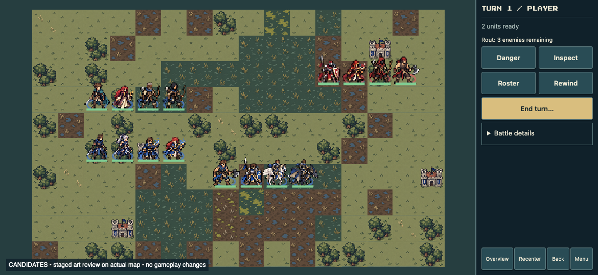
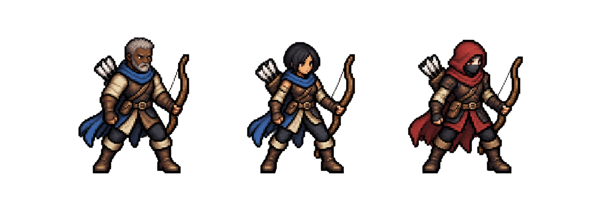
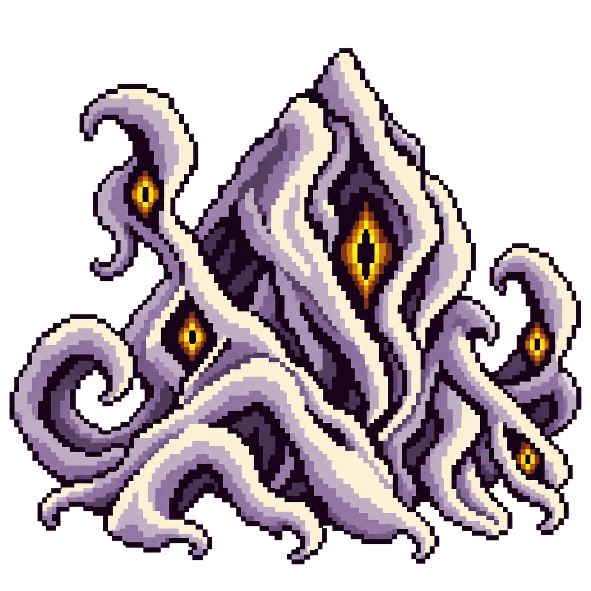

NEW: Sword-class legibility experiment and development principles
Controlled art review: actual game map, mobile HUD, normal camera and tile sizes. Unit positions are staged; HUD counts still describe the original test fixture. No shipping assets changed.
Revised archers

Upper-left row: Edric, Sera, Archer A, Archer B. Middle-left: two Myrmidons and two Mages. Lower row: Fighter, Knight, Pegasus Knight, Wyvern Rider. Enemies are at upper right. Compare at full size before zooming.

Gray-haired, dark-skinned veteran and black-haired, olive-skinned recruit. The aim is distinct head shapes and silhouettes, not simply recoloring the same hairstyle. This is one trial pair; the full roster has not been regenerated.

Stationary 3×3 boss: ivory/lavender tendrils, multiple amber eyes, broad rooted mass. Matches Eldritch Grasp / Twisting Vortex and splash mechanics. The humanoid candidate is rejected. The 128×128 renderer texture is saved in revision/sprites/entity-1.png; boss-scale scene validation remains to do.
Full class gallery · Exact prompts (built-in image generation)